CH31 — ep
episode一覧（サムネ付き / 綺麗なURL）
ep
Script Viewer
書庫
snapshot
guide
老後の人間関係、心が晴れる物語 (CH31)
script 0/30
updated_at: 2026-01-14T03:14:08.313083Z
URL例:
/ep/CH31/001/thumb/
CH31-001
町内会で私だけ外された…“理由”が情けなかった
script —
画像 —
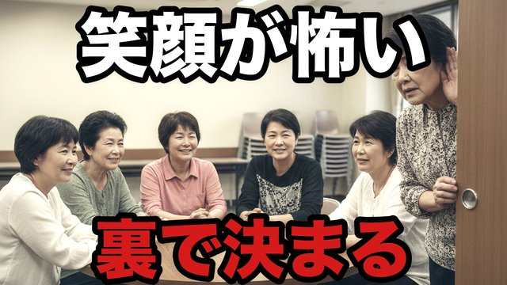
CH31-002
趣味サークルの“笑顔”が怖い…裏で決まっていたこと
script —
画像 —
CH31-003
同窓会の席がない…私は静かに帰った
script —
画像 —
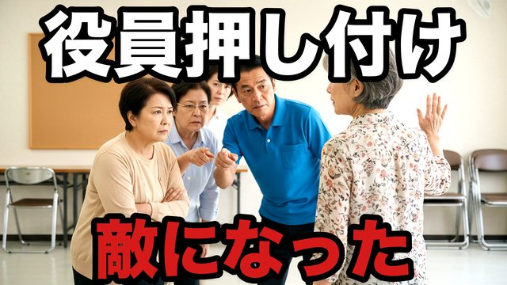
CH31-004
役員押し付け…断ったら“敵”になった
script —
画像 —
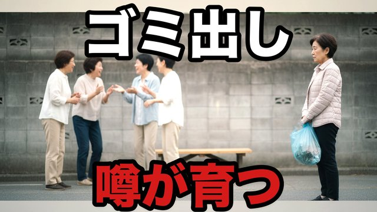
CH31-005
ゴミ出しの噂…小さなことが大きくなる町
script —
画像 —
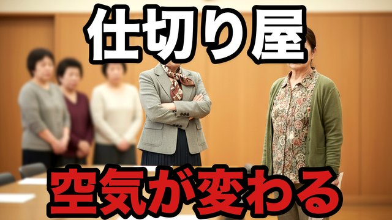
CH31-006
“仕切り屋”の一言で空気が変わる…私は黙らなかった
script —
画像 —
CH31-007
文化祭で笑われた…でも味方が一人現れた
script —
画像 —
CH31-008
“噂の中心人物”が崩れた日…町が静かに変わった
script —
画像 —
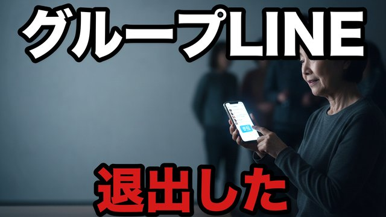
CH31-009
サークルのLINEが地獄…退出ボタンが救いだった
script —
画像 —
CH31-010
“無料の手伝い”が当たり前…私は一回だけ断った
script —
画像 —
CH31-011
役員会の会計…私だけ疑われた
script —
画像 —
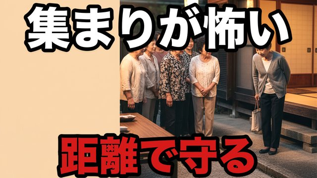
CH31-012
近所の集まりが怖い…でも“距離”で守れた
script —
画像 —
CH31-013
仲間外れの写真…“穏やか”の意味が分かった
script —
画像 —
CH31-014
同窓会で昔の序列…今も続いていた
script —
画像 —
CH31-015
“正義の注意”が暴力になる…町の空気が壊れた
script —
画像 —
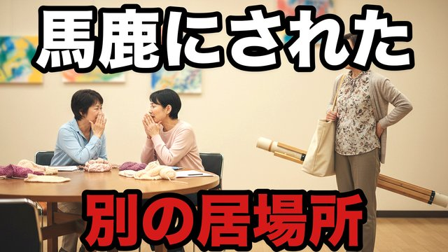
CH31-016
趣味を馬鹿にされた…私は“別の場所”を見つけた
script —
画像 —
CH31-017
「あなた抜けたら楽」…その言葉が救いになった
script —
画像 —
CH31-018
町内会の寄付…断ったら冷たくなった
script —
画像 —
CH31-019
“一人だけ役割”が固定…私は壊れる前に降りた
script —
画像 —
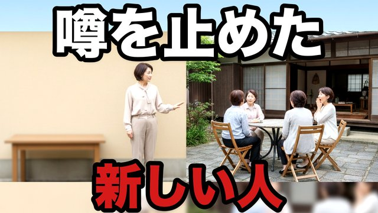
CH31-020
噂を止めたのは“新しく来た人”だった
script —
画像 —
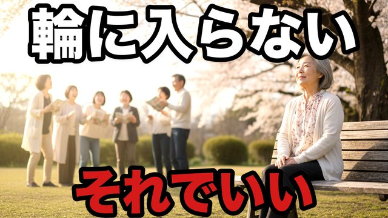
CH31-021
“仲良しの輪”に入らない…それが正解だった
script —
画像 —
CH31-022
文化祭での一言…私の作品が救われた
script —
画像 —
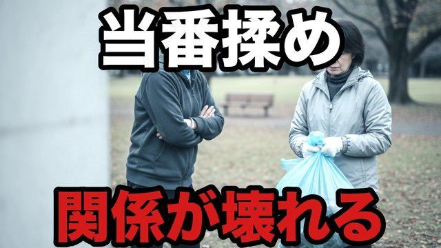
CH31-023
掃除当番の揉め事…“手伝い方”で壊れる
script —
画像 —
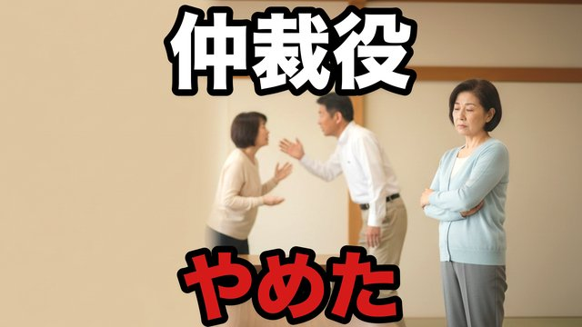
CH31-024
“仲裁役”をやめた…私は私を守る
script —
画像 —
CH31-025
役員の引き継ぎ…私だけ責められた夜
script —
画像 —
CH31-026
“上からの褒め”が辛い…私は受け取らなかった
script —
画像 —
CH31-027
同窓会の二次会…私は行かない勇気を持った
script —
画像 —
CH31-028
“居場所”は作り直せる…新しい輪は静かだった
script —
画像 —
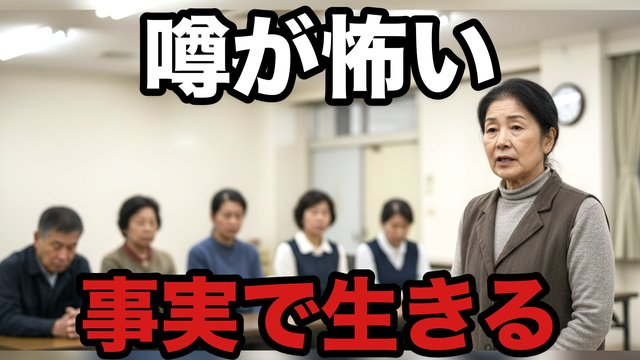
CH31-029
噂を恐れない…“事実”だけで生きる
script —
画像 —
CH31-030
最後に残ったのは“静かな仲間”だった
script —
画像 —